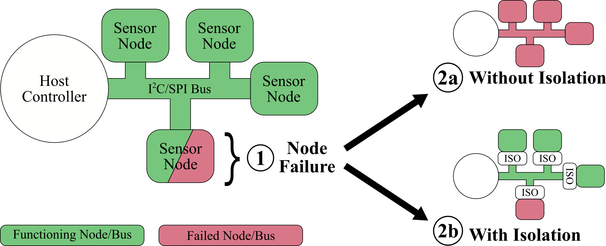

Novel Serial Bus Protection
Did you know?
A single misbehaving (failed) I2C or SPI device is capable of disabling the entire communication bus?
This poses a serious threat to mission success as more and more sensors, radios, and other devices are added to the electronic system (CubeSats included)!
{kind=link}

The impact device count (n) has on bus reliability (without isolation/protection circuits) can be modeled as a series system. Assuming all devices have the same probability of failure (P):
That means probability of bus failure increases EXPONENTIALLY with device count! Better hope your mission critical devices aren't on that bus.
PyCubed's solution
PyCubed has a novel solution to improving system reliability through automatic serial bus isolation circuits. Introduced on mainboard.v05 are autonomous isolation circuits for I2C and SPI communication buses effective at preventing bus-wide failure in the event of peripheral device malfunction without requiring additional I/O or processing overhead.
- View the full isolation circuit design on page 7 of the mainboard.v05 schematic
How does this impact me?
Since the isolation circuits are autonomous, there's nothing to be checked or maintained in software.
FOR EXAMPLE:
Imagine the on-board IMU is damaged and shorts the I2C clock (SCL) to ground, this would normally disable the SAMD microcontroller from contacting the power monitor, USB charger, and any other I2C devices also on that bus. However, with the isolation circuits, communication between the SAMD and the power monitor, USB charger, etc... will be preserved. 🎉
Same goes for the SPI bus, thereby protecting the SD card, radios, etc...
Keep in mind that if you add additional I2C or SPI devices to the bus (with the 🎛Payloads & Interfacing with External Boards connectors, for example), you will need to include the isolation circuits on those boards as well. Use PyCubed's open source schematics and PCB layouts as a template.
What's the catch?
Like everything, this nifty serial isolation solution comes with a trade off! In our case, it's a compromise between power draw (especially in the event of peripheral device failure) and bus speed.
- As implemented on PyCubed, for each I2C device that fails and isolation is automatically enabled, the circuit will draw an additional ~300uA of current. This performance translates to an I2C bus capable of Fast-Mode speeds (400 kHz), but not Ultra-Fast Mode (5 MHz).
- Faster bus speeds can be achieved, but that the expense of increased power consumption!
- If faster I2C bus speeds are desired, reduce the pull-up resistor values from 10K to 4.7K or even 3.3K. For the IMU isolation block, this would be R44, R45, R66, and R67.
- See the serial bus isolation paper for more details.